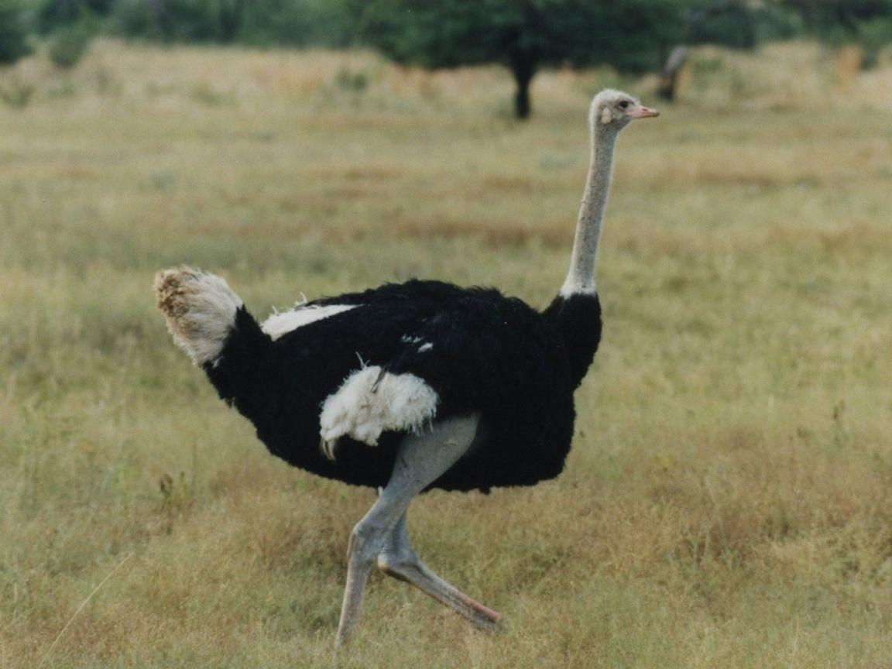

ABOUT OSTRICH
Ostriches are flightless birds that are native to Africa, and are the largest bird species in the world. They are part of the Struthionidae family, and their scientific name is Struthio camelus.

Here are some interesting facts about ostriches:
- Ostriches are the only birds that have two toes on each foot, with one toe being larger than the other. Their feet are also very powerful and are used for kicking, which can be dangerous.
- Ostriches are omnivores, and their diet consists of plants, insects, small animals, and even rocks and pebbles which they swallow to aid in digestion.
- Male ostriches have black feathers, while female ostriches have grayish-brown feathers. The males are also larger than the females and have a distinctive red or pink coloration on their necks.
- Ostriches are able to survive in very hot and dry environments, and they have several adaptations that help them to do so. For example, they can tolerate high temperatures by panting and regulating their body temperature through their beaks.
Back to main page